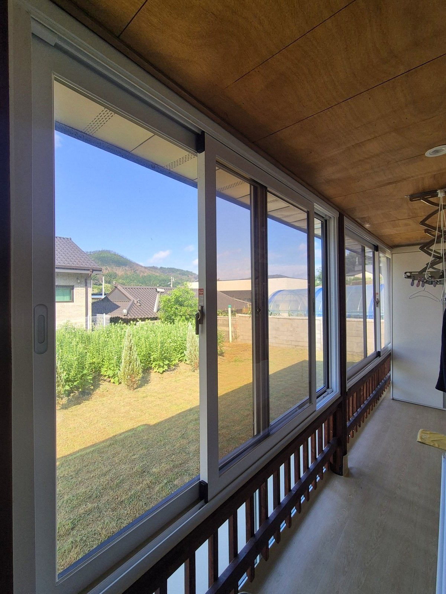
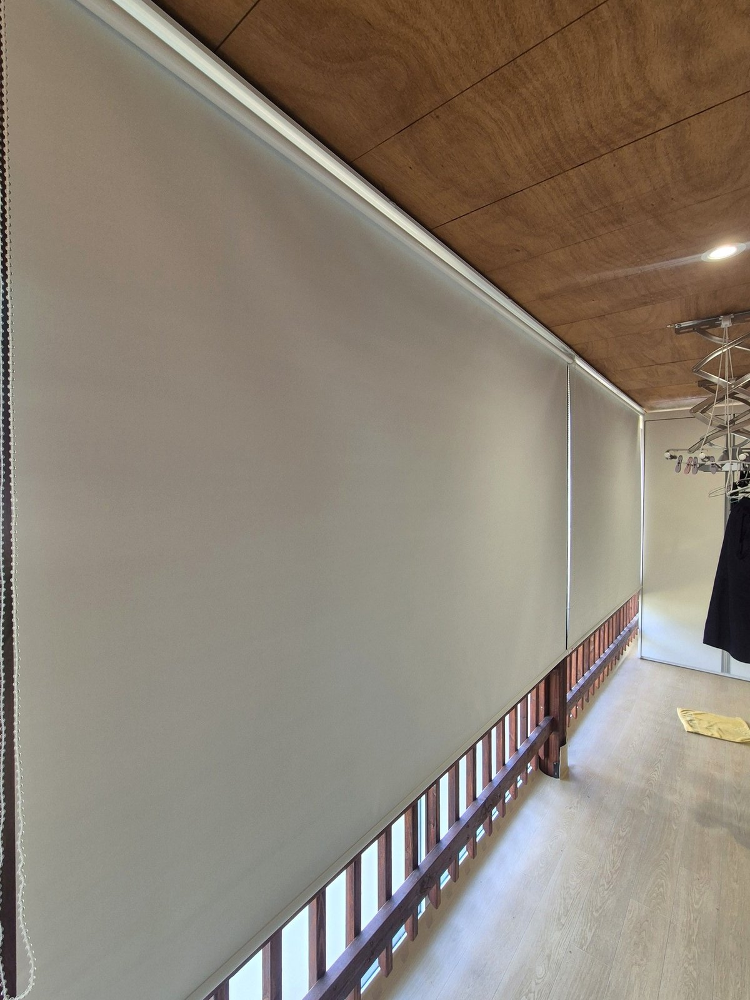
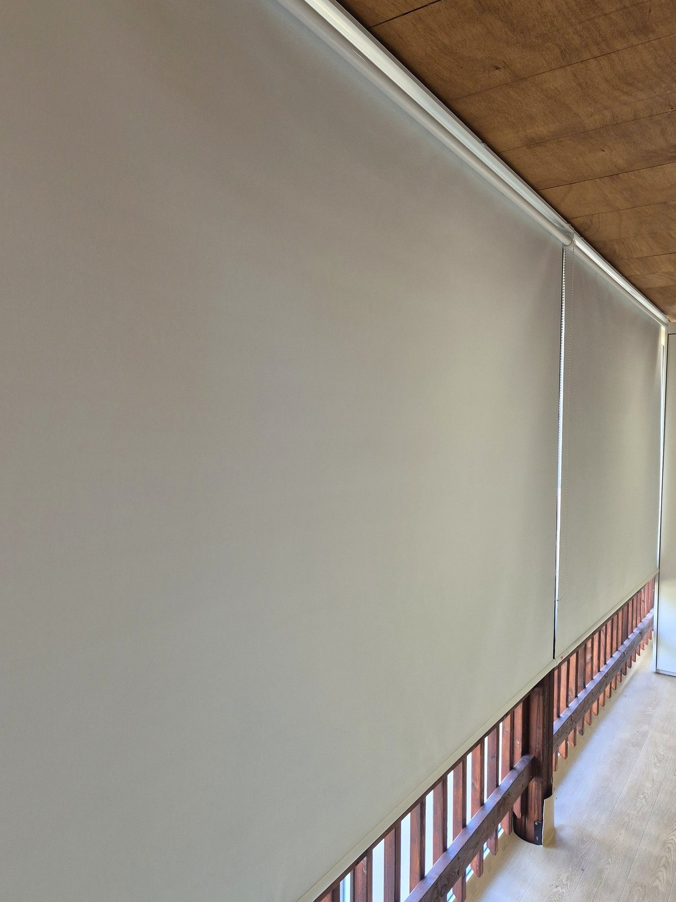
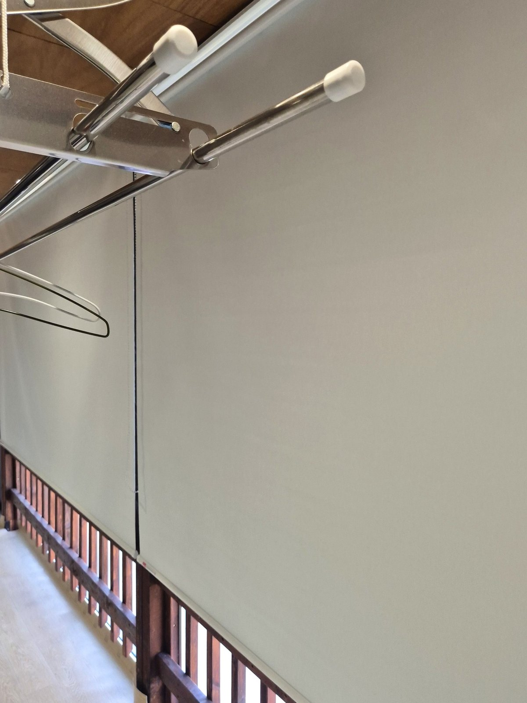
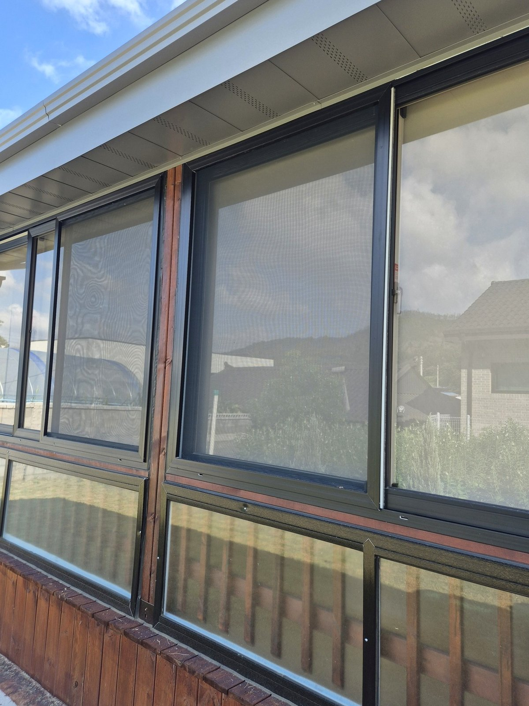
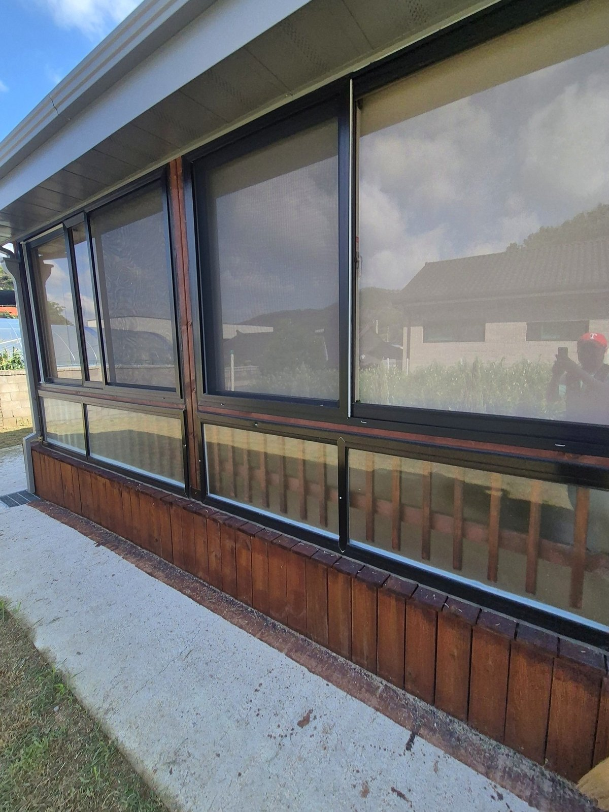

2026년 7월 21일 시공
의성 단촌면 단독주택 썬룸
화이트 암막 롤스크린 시공후기

여름 오후, 썬룸 문을 열었다가 훅 끼치는 열기에 뒷걸음친 적 있으신가요.
사방이 유리라 볕은 예쁘게 들지만, 그 볕이 고스란히 열이 되는 계절이 바로 지금입니다.
의성 단촌면 단독주택 사장님도 같은 고민으로 연락 주셨습니다.
"썬룸에 해가 너무 강하게 들어와서 낮엔 들어가지도 못하겠다"는 말씀이셨습니다.

볕 좋던 썬룸이 여름엔 왜 부담이 될까요
썬룸은 채광이 매력이지만, 한여름 직사광선은 유리를 그대로 통과해 실내 온도를 훅 끌어올립니다.
바닥과 벽이 데워지면 저녁까지 열이 안 빠지고, 눈부심 때문에 빨래를 널거나 잠깐 쉬기도 불편해집니다.
이 댁도 남향으로 길게 난 유리창을 통해 오후 내내 볕이 쏟아지고 있었습니다.
가리긴 가려야 하는데, 방법이 문제였습니다.
두꺼운 커튼을 치면 좁은 썬룸이 더 답답하고 어두워지고,
얇은 원단은 볕과 열을 제대로 막지 못하니까요.

그래서 화이트 암막 롤스크린을 추천드렸습니다
볕과 열은 확실히 막되 공간은 답답하지 않게 — 이 두 가지를 동시에 잡으려고 화이트 색상의 암막 롤스크린으로 안내해 드렸습니다.
암막 원단이라 직사광선을 제대로 차단해 한낮에도 실내 온도 상승을 눌러줍니다.
색은 밝은 화이트라 스크린을 내려도 공간이 어두컴컴해지지 않습니다.
좁은 썬룸일수록 진한 색보다 밝은 색이 훨씬 넓고 환해 보이거든요.

필요할 때만, 창마다 따로 조절됩니다
롤스크린은 커튼처럼 부피를 차지하지 않고 천장 라인에 깔끔하게 붙습니다.
필요할 땐 쭉 내려 볕을 막고, 아침저녁엔 걷어 올려 채광을 그대로 살릴 수 있습니다.
창마다 따로 조절되니 해가 드는 쪽만 골라 내릴 수도 있고요.
썬룸처럼 창이 여러 폭으로 이어진 공간에서는, 이 창별 조절이 하루 종일 볕을 따라다니며 딱 필요한 만큼만 가릴 수 있게 해줍니다.

설치 후, 같은 공간이 이렇게 달라집니다
스크린을 내리자 그 강하던 오후 볕이 부드럽게 차단되면서, 유리방 특유의 후끈함이 눈에 띄게 가라앉았습니다.
그러면서도 화이트 원단을 통해 은은한 빛은 남아 있어 답답하지 않고, 빨래 건조대가 있는 다용도 공간이 한결 쾌적해졌습니다.
사장님도 "진작 할 걸 그랬다"며 만족해하셨습니다.

썬룸이나 유리 발코니 때문에 여름 볕·열이 고민이시라면, 공간 크기와 방향에 맞춰 원단과 색을 골라드립니다.
창 사진 한 장만 주시면 방문 전에 견적부터 알려드립니다.
의성을 포함한 대구·경북 전 지역, 주택·아파트·상가 커튼과 블라인드 시공이 고민되시면 편하게 문의 주세요.